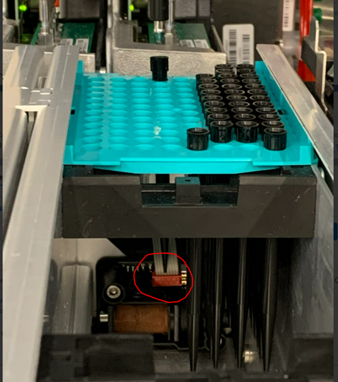

STL – Sample Tip Loss
Assay Processing Flag
Complaint Description
Sample Tip Loss – Sample pipettor lost a tip.
Technical Support
Tip Loss
Resolution:
- If the tip loss occurred in a sample tube, follow the instrument’s on-screen instructions to minimize possible contamination.
- Advise the Operator (or the FSE
 Field Service Engineer.) to take great precaution as the dropped tip can lead to or cause contamination.
Field Service Engineer.) to take great precaution as the dropped tip can lead to or cause contamination.Important: If the lost tip is not carefully or properly removed, contamination can easily spread. - Cannot rerun the specimen tube as the sample is now considered contaminated (or lost) as it is unknown how the dropped tip will affect the test results.
Test:
- Determine if there is dropped tip in any of the bottles.
- Ensure the tips are not on the pipettor.
Field Service
Tip loss
Resolution:
- If the tip loss occurred in a sample tube, follow the instrument’s on-screen instructions to minimize possible contamination.
- Advise the Operator (or the FSE) to take great precaution as the lost tip can lead to or cause contamination.
Important—If the lost tip is not carefully or properly removed, contamination can easily spread. - Fix or remove any hardware obstruction.
- Re-teach the Pipettor.
Test:
- Identify the source and destination when the STL error was generated. Consider the following scenarios: for example, (A) Did the tip hit something and fall off the pipettor? (B) Was the pipettor properly picked?
- Visually verify any sources of obstruction between the source and the destination. NOTE:
Note—Determine actions that the instrument was performing with the pipettor when the tip fell off. Consider the following scenarios: (A) Did the instrument just “pipette” a reagent prior to dispensing it in a tube? - Use the Service software to recreate the problem, if an obstruction was not found (Pick tip, move down, move up, move to your destination).
Tip Sensor Malfunction
Resolution:
Replace the Pipettor arm if the sensor is defective.
Test:
Monitor the tip presence sensor using the Service software while manually moving the DiTi sleeve up and down to determine the proper functioning of the sensor.
Other Items to Check
-
Tip Type matters. Customer should be using Biorear PN C30A0014-B13 or -B17 or Tecan PN 10612513 or 30180117. If tips other than these are being used, this may be the issue.
-
Check the Eject Sleeve. If Eject Sleeve has not been upgraded, do so. TB-01627.
-
Verify the Service Drawer is Closed.
-
Check Teaching of the pipettor.
-
Check Pipettor V and L white Slide bearings.
-
Check Z-Motor.
-
If at the Reagent Bay, check the Reagent Bay Shutter is moving correctly.
-
Review logs and look for Pipettor X, Y or Z movement errors.
-
Look for obstructions. One example, ribbon cable in the tip drawer interfering with the tips:

 button at the top of the page to send feedback, comments, or change requests.
button at the top of the page to send feedback, comments, or change requests.